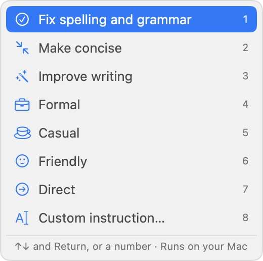

Tap right Option twice in almost any Mac app. Nudge fixes, shortens or rewrites your text, right where you typed it, with Apple’s AI on your Mac.
Free. No account. Needs macOS 26, Apple silicon and Apple Intelligence.
hey sam can you send me the q3 report by friday, i need it for the board meeting on monday

Tap right Option twice.
It works on this page too.
See it work
Every rewrite here came from Nudge’s own code and Apple’s model. Every menu and window is Nudge’s real screen, with sample data. Click one to make it bigger.
A small app that stays out of the way
Nudge lives in your menu bar. It only opens a window when you want to change something.
The AI is already on your Mac.
So your words don’t need a server.
- Who does the rewriting?
- Apple’s model, on your Mac. Nudge has no server, no account and no tracking.
- Does it use the internet?
- Only to check for updates and download them.
- What can it read?
- It looks at the box you’re in to see if it holds text, and reads that text to rewrite it. It skips password boxes.
- What does it save?
- With learning on, it watches a rewrite for up to 90 seconds and saves short snippets on your Mac. You can switch this off or delete them.
- Does it use the clipboard?
- In browsers and some apps, for a moment, to paste. It marks that for this Mac only, then puts back what you had.
- Can it get things wrong?
- Yes, it’s AI. Read it before you send it. Undo is in the same menu. It handles up to 3,000 characters at a time.
Give your words a nudge.
- Click Download for Mac.
- Open Nudge.dmg from your Downloads, then drag Nudge into Applications.
- Open Nudge and switch on Accessibility when it asks.
Free and open source. Checked by Apple for malware. Updates itself.